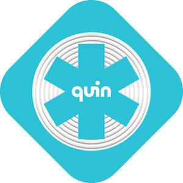

Trade Mark Journal No.2025/049 5 December 2025
UK00004297837 20 November 2025 (9,25,35,42,45)

- Class 9
- Downloadable mobile application software for detecting and reporting emergency situations; Downloadable mobile application software for detecting and reporting emergency situations, and for manual SOS requests, enabling emergency contact notifications, SMS, E-mails and automated calls to emergency services; Downloadable mobile application software for monitoring, displaying, and analyzing motion data; Downloadable mobile application software for monitoring, displaying, and analyzing motion data, linear velocity, linear acceleration, rotational velocity, rotational acceleration and impact acceleration from accelerometers, gyroscopes, gps, and high refresh rate impact sensors to provide comprehensive insights into user performance and safety; Downloadable mobile application software for monitoring, displaying and analyzing orientation data; Downloadable mobile application software for monitoring, displaying and analyzing orientation data, yaw, pitch, roll, quaternions, euler angles and rotation matrices from sensor filtering, sensor fusion and customized algorithms to provide interactive graphs, 3D visualization, impact location, orientation tracking and spatial tracking; Downloadable mobile application software for data analysis; Downloadable mobile application software for planning and recording bicycle and motorbike rides and sessions, providing ride information, distance, time, speed, acceleration, map representation, hard braking, hard acceleration, ride insights, weather forecast and safety score; Downloadable mobile application software for monitoring, displaying and analyzing motion data; Downloadable mobile application software for monitoring, displaying and analyzing motion data by implementing customized machine learning algorithms for event recognition, gait detection, jump detection and other activity recognition; Downloadable mobile application software for sharing data with emergency contacts and services; recorded and downloadable software to enable emergency contacts and emergency services to monitor changes to an emergency event in real time; Downloadable mobile application software featuring maps; Downloadable mobile application software featuring weather reports; sensors; sensors featuring accelerometer, gyroscope, temperature sensor, motion sensor, impact detector, free fall detector, linear acceleration detector, rotational velocity and acceleration detector, impact acceleration detector, and/or spatial rotation detector; computer software platforms for detecting, reporting, monitoring and analyzing data; computer software platforms for detecting, reporting, monitoring and analyzing emergency situations; software for the management of equipment; Electronic tracking and monitoring software Electronic tracking and monitoring hardware; apparatus and equipment for electronic tracking and monitoring; sports performance monitoring software; sports performance monitoring hardware; sports performance monitoring apparatus and equipment; computer hardware and software for the management, analysis and interpretation of sports-related data; Internet of Things [IoT] gateways; Computer hardware modules for use with the Internet of Things [IoT]; Internet of Things [IoT] sensors; Sensors for devices compatible with the Internet of Things [IoT]; Detectors for devices compatible with the Internet of Things [loT]; Monitoring apparatus for devices compatible with the Internet of Things [IoT]; Software applications for devices compatible with the Internet of Things [IoT]; Computer hardware modules for use in electronic devices using the Internet of Things [IoT]; Computer hardware modules for use in electronic devices using the Internet of Things [IoT]; electronic publications; downloadable electronic publications; electronic databases; recorded and downloadable software to read, program, and display data from near field communications (NFC) chips and tags; downloadable mobile application software to read, program, and display data from near field communications (NFC) chips and tags; Radio Frequency Identification (RFID) chips and tags; near field communications (NFC) chips and tags; receivers and transmitters for use with Radio Frequency Identification chips and tags; receivers and transmitters for use with near field communications chips and tags; instruments and equipment for near field communications; near field communication technology-enabled readers; antennas and controllers for scanning, reading and interpreting near field communications and Radio Frequency Identification chips and tags; integrated circuits for near field communications applications; near field communication technology-enabled devices; mobile-based application software used only in the development and testing of near field communications chips and tags; Motorcycle helmets; Bicycle helmets; Riding helmets; Helmets (Riding -); Headgear being protective helmets; Skateboard helmets; Snowboard helmets; Helmets for motorcyclists; Safety helmets; Protective helmets; Helmets (Protective -); Diving helmets; Crash helmets; Ski helmets; Welding helmets; Hockey helmets; Football helmets; Helmets for use in sports; Sports helmets; Protective helmets for motor cyclists; Protective helmets for motorists; Protection helmets for sports; Helmets for bicycles; Boxing helmets; Crash helmets for cyclists; Drivers helmets; Protective helmets for sports; Helmets (Protective -) for sports; Protective sports helmets; Sports (Protective helmets for -); Protective helmets for use in sports; Catchers' helmets; Solderers' helmets; Safety headgear; Baseball batting helmets; Ice hockey helmets; Protective helmets for children; Helmet communications systems; Protective headgear; Helmets for American football; Hi-viz safety clothing; Headgear for protection against accident; Safety headwear; Riding hats; Protective headgear for the prevention of accident or injury; Headgear for protection against injury; Protective clothing [body armour]; Internet of Things [IoT] sensors for use in relation to protective gear namely headwear, footwear, eyewear, respiratory devices, earmuffs, and body armour, safety systems, emergency response systems, fall arrest devices, life saving harnesses, full body harnesses, safety harnesses, telemetry, and/or related data; Internet of Things [IoT] gateways sensors for use in relation to protective gear namely headwear, footwear, eyewear, respiratory devices, earmuffs, and body armour, safety systems, emergency response systems, fall arrest devices, life saving harnesses, full body harnesses, safety harnesses, telemetry, and/or related data; Computer hardware modules for use with the Internet of Things [IoT] sensors for use in relation to protective gear namely headwear, footwear, eyewear, respiratory devices, earmuffs, and body armour, safety systems, emergency response systems, fall arrest devices, life saving harnesses, full body harnesses, safety harnesses, telemetry, and/or related data; Computer application software for use in implementing the Internet of Things [IoT] sensors for use in relation to protective gear namely headwear, footwear, eyewear, respiratory devices, earmuffs, and body armour, safety systems, emergency response systems, fall arrest devices, life saving harnesses, full body harnesses, safety harnesses, telemetry, and/or related data; AI software for use in relation to protective gear namely headwear, footwear, eyewear, respiratory devices, earmuffs, and body armour, safety systems, emergency response systems, fall arrest devices, life saving harnesses, full body harnesses, safety harnesses, telemetry, and/or related data; Cloud server software for use in relation to protective gear namely headwear, footwear, eyewear, respiratory devices, earmuffs, and body armour, safety systems, emergency response systems, fall arrest devices, life saving harnesses, full body harnesses, safety harnesses, telemetry, and/or related data; parts and fittings for the aforesaid; fall arrest devices; life saving harnesses; full body harnesses; safety harnesses.
- Class 25
- Clothing; footwear; headwear; Sports headgear [other than helmets]; Headgear; Boots for motorcycling; Insoles for footwear; Footwear; Footwear [excluding orthopedic footwear]; Footwear for sport; Footwear for use in sport; Cycling shoes; Apres-ski shoes; Skiing shoes; Sports caps and hats; Soccer shoes; Footwear for snowboarding; Headbands; Headbands [clothing].
- Class 35
- Data management; data processing; electronic data processing; Collection and analysis of information; database management; compilation of data into computer databases; analyzing and compiling data; analyzing and compiling sports-related data; analyzing and compiling data related to accidents and emergency situations; product sales information and data; product sales information and data presented in a retail environment; providing consumer product information; providing consumer product information in digital form; provision of information and advice to consumers regarding the selection of products and items to be purchased; provision of information and advice to consumers regarding the selection of products and items to be purchased in digital form; information, advisory and consultancy services relating to all the aforesaid.
- Class 42
- Cloud computing services; Software as a service [SaaS] featuring software for deep learning; Software as a service [SaaS] featuring software for machine learning; all of the aforesaid relating to or being for use with protective gear, namely headwear, footwear, eyewear, respiratory devices, earmuffs, and body armour, safety systems, emergency response systems, telemetry, and/or related data; Technical data collation and analysis; Design and development of computer hardware and software; Programming of software for Internet platforms; Software as a service [SaaS]; platform as a service [PaaS]; Platforms for artificial intelligence as software as a service [SaaS]; Platform as a service [PaaS] featuring software platforms for transmission of images, audio-visual content, video content and messages; Computer services, namely, on-site and remote management of IT systems; Installation, updating and maintenance of computer software; Computer software technical support services; Technical support services, namely, troubleshooting in the nature of diagnosing computer hardware and software problems; Computer software development; Computer hardware development; Software as a service; platform as a service; database design; maintaining databases; database development services; software as a service [SaaS] featuring software for detecting, reporting, monitoring and analyzing data; platform as a service [PaaS] featuring software platforms for detecting, reporting, monitoring and analyzing data; platform as a service [PaaS] featuring software platforms for transmission of data, images, audio-visual content, video content and messages; technical data analysis; software as a service [SaaS] featuring software for equipment management; platform as a service [PaaS] featuring software platforms for equipment management; Platform as a service (PAAS) featuring website portals, application programming interfaces (API), and computer software platforms for use in data sharing, data analysis, and data aggregation; Computerised analysis of data; providing information in the field of product design and development; information, advisory and consultancy services relating to all the aforesaid.
- Class 45
- Licensing of trademarks; Licensing of patents; Software licensing; Licensing of software; Licensing of technology; Licensing of databases; Licensing of intellectual property.
Quin Design Limited
Representative: D Young & Co LLP